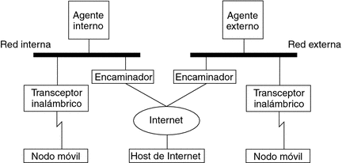

Mobile Ip
Is a standard protocol created by the Internet Engineering Task Force (IETF) and designed to allow users of mobile devices to move from one network to another by permanently maintaining their IP address. The Mobile IP protocol is described in IETF RFC 3344.
Introduction
Mobile IP offers an efficient and scalable mechanism for mobile nodes within the Internet. With Mobile IP, nodes can change their access the Internet without having to change your IP address. This allows to keep high-level transportation and connections while on the move. The mobility of node is performed without the need to propagate host paths through routing.
Applications
Mobile IP is frequently found in wireless WLAN environments (wireless networks) where users need to carry their devices through various networks (LANs) with different IP addresses. This can also be used on 3G networks to provide transparency when Internet users migrate between cellular antennas.In many applications, such as VPN and VoIP, to name a few, sudden changes in the network and in the IP address can cause problems.
Characteristics
- It has no geographical limitations, so the user can connect anywhere.
- It does not need a physical connection.
- You don't have to modify routers or terminals as they keep your IP.
- It does not affect transport and high-level protocols.
- Supports security to ensure the protection of users.
- The network change must be slow (if we move in a car, we could not take advantage of the mobile IP features)
How Mobile IP Works
A mobile node can have two addresses, a permanent one (home) and a dynamic address (care-of address), that is, relative to the mobile node when it visits the network. There are two types of entities in Mobile IP:
- A Home Agent (HA) that stores information about the mobile node whose permanent address is that of the agent's network.
- A foreign agent (Foreign Agent, FA) stores information about each visited mobile node on its network. External agents also take care of the address that is being used by the mobile IP.
If the mobile node is in its local network it acts as a fixed node and the packets
will follow the conventional rules. In the case that it is in a foreign network,
a node that wants to communicate with the mobile node uses the initial address (home)
of the mobile node to send it packets.
The Mobile IP protocol defines the following:
- An authentication registration procedure by which the node informs its agent (home) of its Care of Address;
- An ICMP Router Discovery extension, which allows mobile nodes to discover prospective home agents and foreign agents;
- And the rules for routing packets to and from mobile nodes, including the specification of a mandatory mechanism for tunneling and several optional mechanisms for tunneling as well.